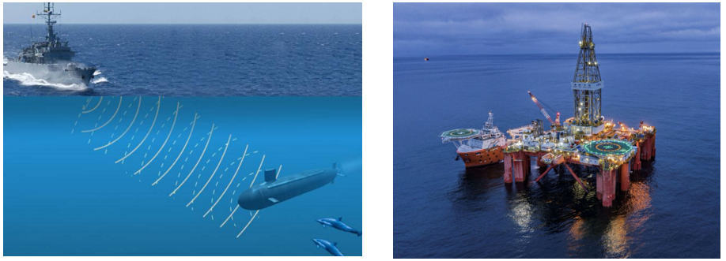
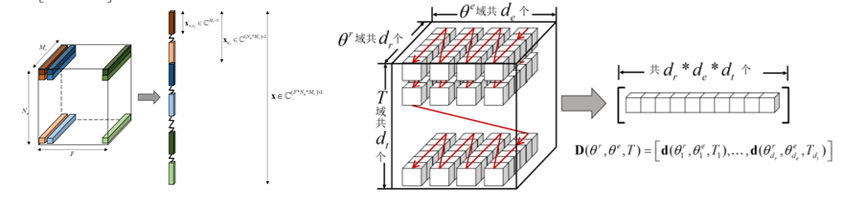
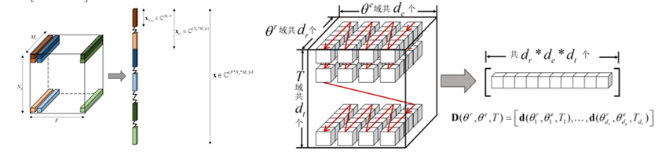

姜龙玉
分别从武汉大学、东南大学及法国格勒诺布尔大学获得工学学士、硕士及博士学位，现为东南大学计算机学院、软件学院、人工智能学院教授、博士生导师。主要从事水声信号与图像处理， 人工智能及大数据等方面的研究工作，近年来先后主持或参与法国国家科研署基金、军委装备发展部预研基金、国家自然科学基金、GF科工局稳定支持，教育部留学回国人员基金等多项科研项目， 在IEEE Journal of Oceanic Engineering, The Journal of the Acoustical Society of America，IEEE Transactions on Circuits and Systems I: Regular Paper 等领域顶刊顶会发表论文50余篇。 获得中国海洋工程科学技术奖（排名第一）、国家级首届xx比赛一等奖、国家级教学成果一等奖、江苏省教学成果一等奖、东南大学青年教师授课竞赛奖、东南大学教学成果一等、二等奖，中泰国立奖教金等奖励。 主要社会兼职有国家留学基金委公派出国项目会评专家，中国图形图像协会视觉传感专委会委员，江苏省通信协会水下通信专委会委员，国家自然科学基金通讯评审。
承担项目
专利
论文
Papers:
- Three-dimensional higher-order raypath separation in a shallow-water waveguide
L. Jiang, Z. Zhang and P. Roux
The Journal of the Acoustical Society of America. 2022, 2(7): 1-8. - Adversarial Attacks on Deep Convolutional Neural Network Object Classification for Underwater Side-scan Sonar Images with Lambertian Model
Q. Ma, L. Jiang* and W. Yu
Pattern Recognition. 2023. - Active Deep Learning Technique for Underwater Target Recognition
J. K. Lv, L. Jiang* et al
IEEE Oceans. 2022. 09, 1-9. - Training with Noise Adversarial Network: A Generalization Method for Object Detection on Sonar Image
Q. Ma , L. Jiang*, W. Yu, et al
Workshop on Applications of Computer Vision. IEEE Computer Society. 2020. - Fast raypath separation based on low-rank matrix approximation in a shallow-water waveguide
L. Jiang and W. Song
The Journal of the Acoustical Society of America. 2018, 143(4): 271-277. - Phase-constrained Parallel Magnetic Resonance Imaging Reconstruction Based on Low-rank Matrix Completion
L. Jiang, R. He, J. Liu, Y. Cheng, H. Shu, J. Coatrieux
IEEE Access. 2017, PP(99): 1~14. - Two-dimensional active raypath separation using examination of the roots of the spectrum polynomial
L. Jiang, R. He, Y. Hong, J. Wu, H. Shu
The Journal of the Acoustical Society of America. 2017, 142(4): 408~414. - Active wideband higher-order raypath separation in multipath environment
L. Jiang, Y. Hong, P. Roux, J. Wu, H. Shu
The Journal of the Acoustical Society of America. 2017, 141(1): 38~44. - Raypath Separation with a High-Resolution Algorithm in a Shallow-Water Waveguide
L. Jiang, P. Roux, J. I. Mars
IEEE Journal of Oceanic Engineering. 2017, 43(1): 1~12. - Automatic detection of the number of raypaths in a shallow-water waveguide
L. Jiang, J. I. Mars
IEEE Journal of Oceanic Engineering 2014, 39(4): 713~723. - Raypath separation with high resolution processing
L. Jiang, J. I. Mars
IEEE Oceans 2011 - Automatic detection of the number of raypaths
L. Jiang, J. I. Mars
IEEE Oceans 2011 - A novel split-radix fast algorithm for 2-d discrete Hartley transform
L. Jiang, H. Shu, J. Wu, L. Wang, L. Senhadji
IEEE Transactions on Circuits and Systems I: Regular Papers 2010, 57(4): 911~924. - 一种新的三维离散 Hartley 变换的分裂基快速算法
姜龙玉, 舒华忠,伍家松, 罗立民
电子学报 2009, 36(6): 1252~1255. - A Novel High-resolution Algorithm for Separating Ray paths Interrupted by Colorful Noise
L. Jiang, Y. Hong, J. Wu, H. Shu, L. Senhadji and J Coatrieux
The Journal of the Acoustical Society of America 2015, 137(4): 2438-2438.

课题组
课题组现共有20余名硕博士研究生。课题组研究方向包括水声信号、人工智能、图像处理及大数据等。 课题组面向学术和工程培养具有独立思考能力、创新精神和较强工程实践能力及良好综合素质的人才。 课题组与法国格勒诺布尔大学、美国伦斯勒理工、法国巴黎综合理工等国外知名学校建立了良好的学生联合培养机制。
研究方向
研究方向1:水下目标探测与跟踪
水下目标的探测和跟踪由于同时具有商业和军事上的重要价值而被越来越多的专家学者以及生产技术人员重视，水下目标的探测和跟踪是未来发展海下微小无人探测器的重要基础和前提。课题组主要从事基于深度学习、压缩感知等技术的水下声源定位、基于主动学习的水下目标探测跟踪等。
 

项目示例一:高分辨阵列处理算法研究
浅海环境中，多路径效应产生的相干信号会对这些声信号的分离造成了较大的千扰。本项目提出了基于双阵列的高阶累积量声信号分离算法和基于子空间的压缩感知波达方向估计算法，用于提高声信号分辨力以及对噪声的鲁棒性。

项目示例二:多维阵列处理算法研究
浅海波导中声速的微小变化会导致接收信号传播时间的明显变化。本项目利用双阵列架构和压缩感知理论提高声线路径识别与估计性能，进而在前端提高海洋声学层析的性能。


研究方向2:人工智能与图像处理
人工智能算法是人类受自然界各种事物规律(如人脑神经元、蚂蚁觅食等)的启发，模仿其工作原理求解某些问题的算法。随着计算机技术的发展，人工智能算法在图像处理方面得到广泛应用。


项目示例一:声呐图像目标主动识别技术研究
随着声呐技术的广泛应用，传统的检测算法难以满足图像大数据在处理效率、性能和智能化等方面所提出的要求。本项目研究并提出基于生成对抗网络的声呐图像目标主动识别框架，将生成对抗网络应用到检测算法中。
项目示例二:声呐图像目标检测算法
围绕声呐图像目标识别结合噪声对抗、实例分割网络等框架，实现了目标的高精度分割与识别。提高了对环境噪声的稳健性。


课题组成员
简历投递
欢迎乐观善良，有好奇心，有理想，能脚踏实地，持之以恒努力的同学加入课题组！对学术感兴趣的优秀同学可推荐至MIT、UCSD等知名高校继续深造；对工程应用感兴趣的同学可推荐至腾讯、阿里、中国电科集团、船舶集团等知名企业实践就业！
请发送简历至 JLY@seu.edu.cn